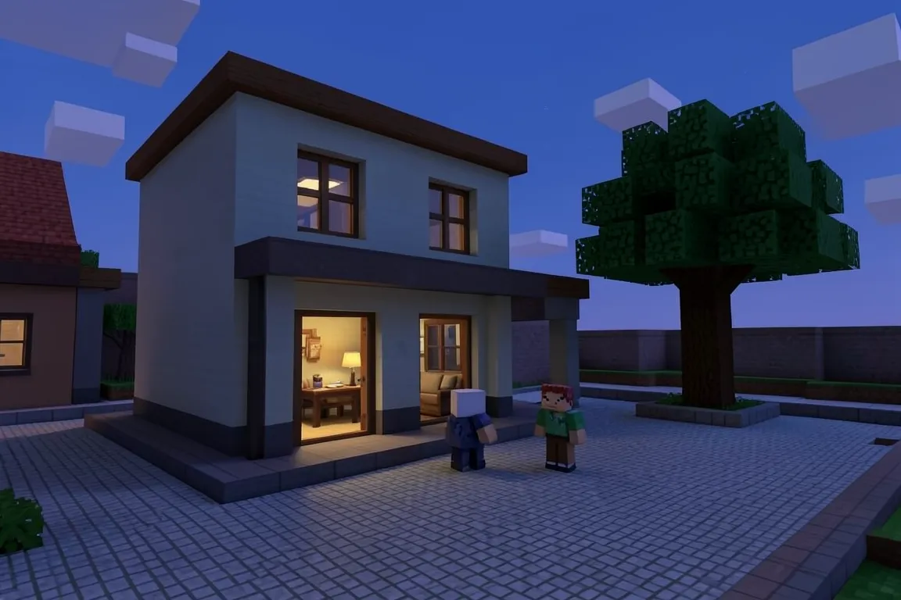

Verden er et rutenett av kuber på 1 m, hver med en 16×16 piksler stor tekstur på flatene. Hvert hus, rom og hver bakke bygges blokk for blokk, med nærmeste-nabo-piksler og enkelt flatelys.

Kjerneidé
Hvis verden er et rutenett av like blokker, kan alle bygge i den, og selve rutenettet blir stilen.
Designprinsipper
Bygg hver flate av kuber på 1 m i et 3D-rutenett.
Tekstur hver flate med 16×16 px pikselkunst, skalert uten filter.
Lys hver flate etter retningen: toppen lysest, sidene middels, bunnen mørkest.
Hold figurene blokkaktige: en kropp av rektangulære bokser.
Bruk klare, mettede materialfarger: gressgrønn, jordbrun, steingrå.
La byggverk leses som stablede blokker; unngå å skjule rutenettet.